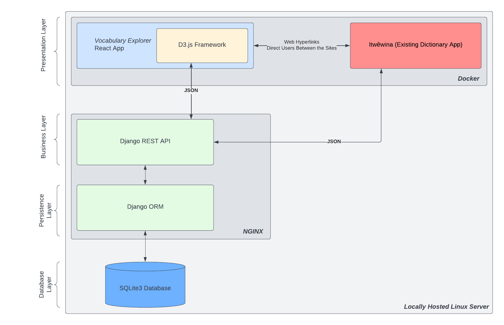
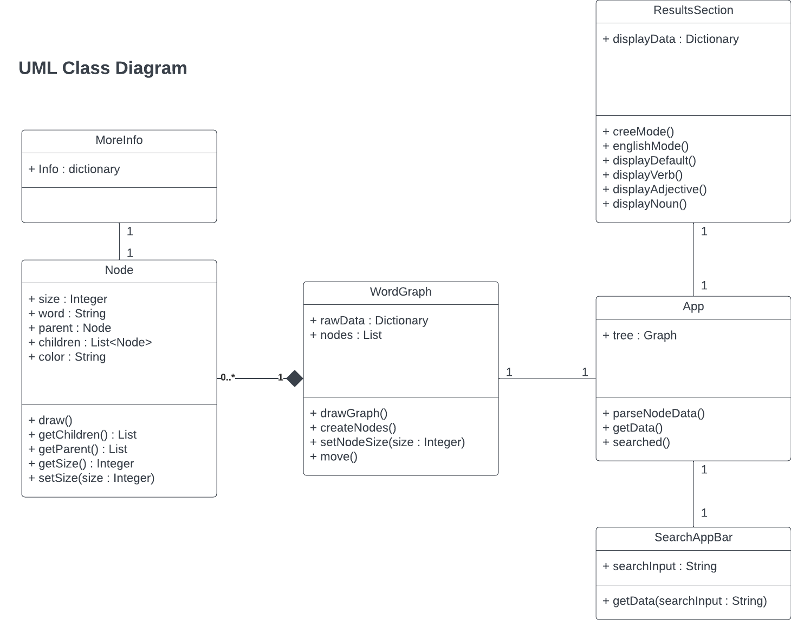
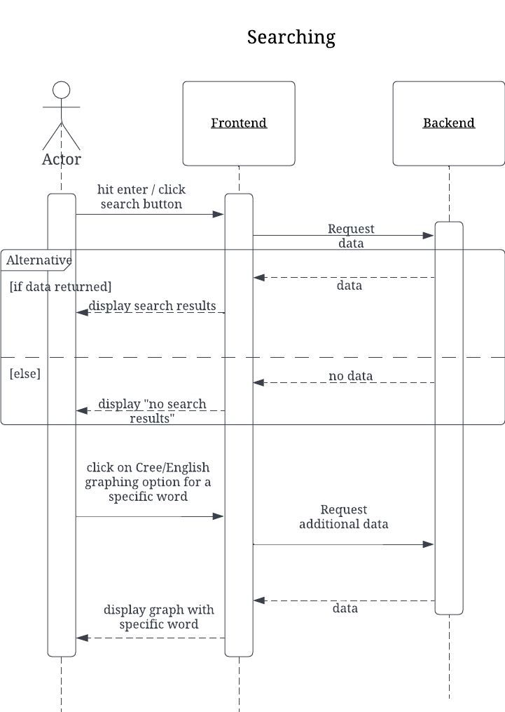
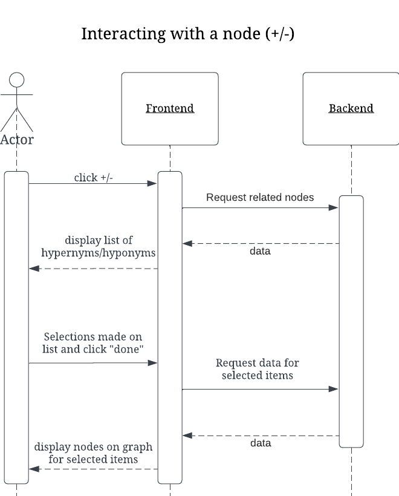
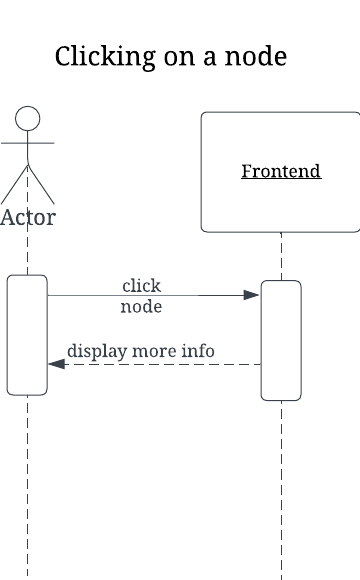
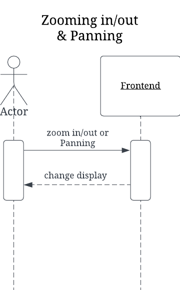
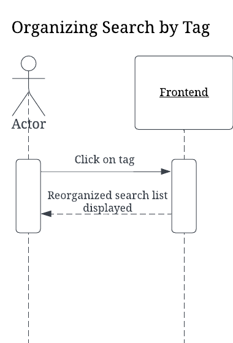

Software Design
Architecture Diagram
This is a diagram of the client's full architecture. However, for this project creating the Vocabulary Explorer, we will only be interacting with the presentation and business layers. 
UML Diagram
UML Class Diagram

UML Components Diagram

Low-fidelity User Interfaces and Storyboard Sequence

Interaction Scenarios





API Endpoints
GET https://api.itwewina.altlab.dev/api/search/
Query Parameters:
- name (ex: atim)
- rw_index (ex: 6.3.1.5.1)
- rw_domain (ex: dog)
GET https://api.itwewina.altlab.dev/api/rapidwords/
Query Parameters:
- q (ex: 1.2.2)